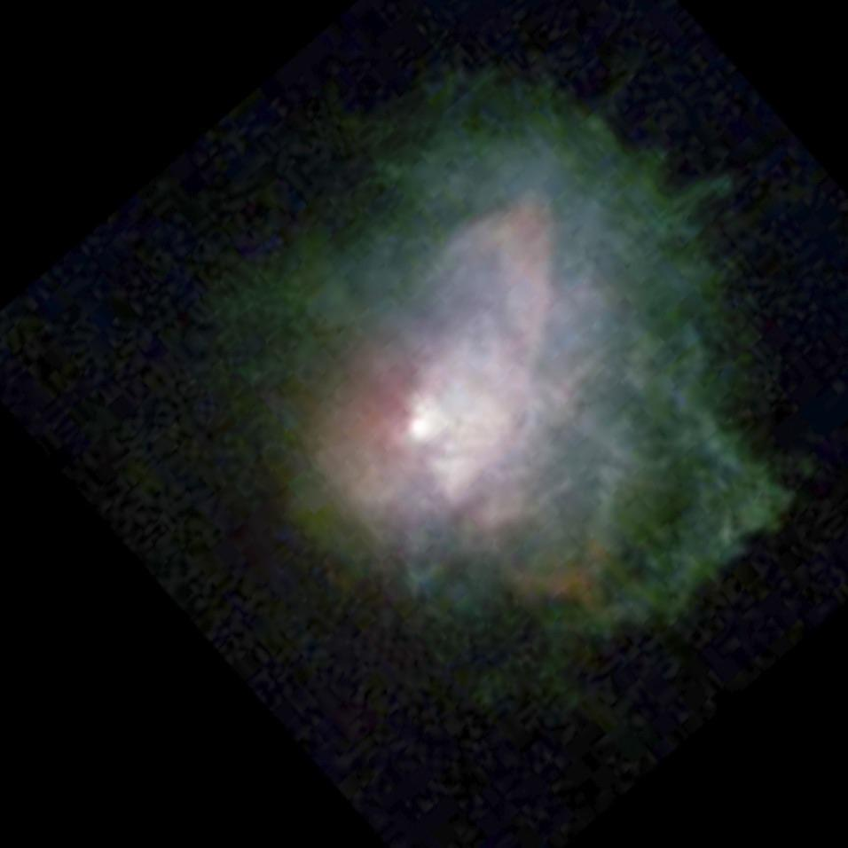
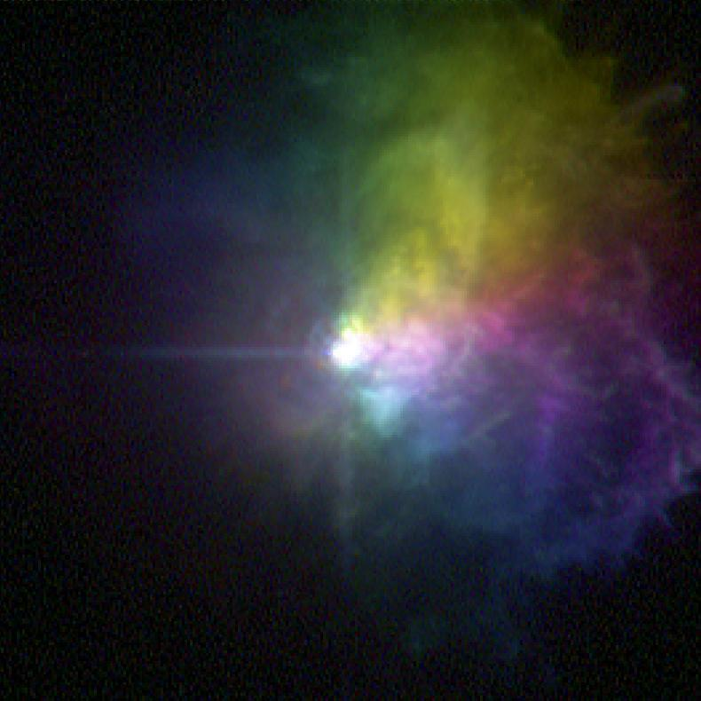

VY Canis Majoris Nebula
- Name: VY Canis Majoris nebula
- RA: 07 22 58.3
- Dec: -25 46 03 (2000)
- Type: Reflection
- Size: ~10"
- Central star: mag 7.4-9.6
The VY CMa nebula was mentioned by Sandor Szabo (with his sketch) on DeepSkyForum in May 2016, but I thought this unique star and nebula was worthy of an OOTW

VY CMa is a remarkable stellar behemoth -- red hypergiant variable star and a powerful infrared source. Although its diameter and luminosity are difficult to pin down precisely, it is certainly one of the largest and intrinsically brightest stars in the Milky Way. The measurement of size is dependent on wavelength, but it extends ~2,000 times the solar diameter with a total bolometric luminosity of 400,000 times or more the Sun's luminosity (though mostly in the infrared).
Episodic extremely high mass-loss ejections - 30 times the mass of the earth/yr - have enshrouded VY CMa in a small, irregular reflection nebula of a gas and dust with a small tail or jet shaped like the Nike Swoosh logo! Interestingly, beginning in 1897 double star observers reported seeing individual companions to VY CMa. These components varied in brightness quite over the years and are now considered to be nebulous condensations (stellar "knots") in the tail.
In 1923, Charles Perrine, director of the Cordoba Observatory in Argentina, reported that observer Senor Guerin discovered a nebula surrounding VY CMa with the 7.5" meridian circle at the observatory.
"Senor Guerin described the object as a nebula about 8" x 12", red, tending toward dark red or scarlet; as containing three nuclei, the preceding of which is the brightest and the point which he observed for position. The general aspect is that of a comet, the tail (which is excessively faint) extending to the [west] (Power 220). With a power of 500 the tail is seen prolonged in a sinuous form to the south...".
Using the 100-inch at Mt. Wilson many years ago, astronomer David Allen reported "The nebula is very easy and appears to be extended mostly to the W. The star is extremely red; several of the star-like knots are visible."
Here are three of my observations (unfiltered) --
17.5-inch: VY CMa is a striking orange-red color. At 175x it appeared slightly fuzzy or soft, like a brighter star that wouldn't focus. At 285x unfiltered, a very small non-stellar orange disc was clearly visible surrounding a brighter center. More surprisingly a short "tail" clearly extended from the glow to the west. At 325x, the central star was cleanly resolved within a very small, 4" round halo. The nebulous tail or filament curved slightly ~8" to the WNW.
24-inch: at 125x, VY CMa stands out in the field as a bright orange-red star. At 375x, VY CMa had a soft appearance (extending a few arc seconds) with a short, nebulous tail extended less than 10" to the west.
48-inch: VY CMa appeared as a mag 8 orange star with a bright, high surface brightness curving jet extending to the west. I was startled by the contrast between the color of the blue jet and the color of the star. The jet bent outwards slightly towards the north.
The mass loss and dust distribution in this nebula was mapped by Keck and HST using polarized light at different wavelengths and colorized in this image --

As always,
"Give it a go and let us know!
Good luck and great viewing!"
Steve's follow-up — March 19th, 2021, 09:42 PM
I was curious about the current appearance and took another look through my 24" two weeks ago. The bright orange star is definitely surrounded by a small halo. I thought the tail to the west was a bit broader and less distinctly defined as 8 years ago (last observation). Could have been seeing conditions, though, which were just average.